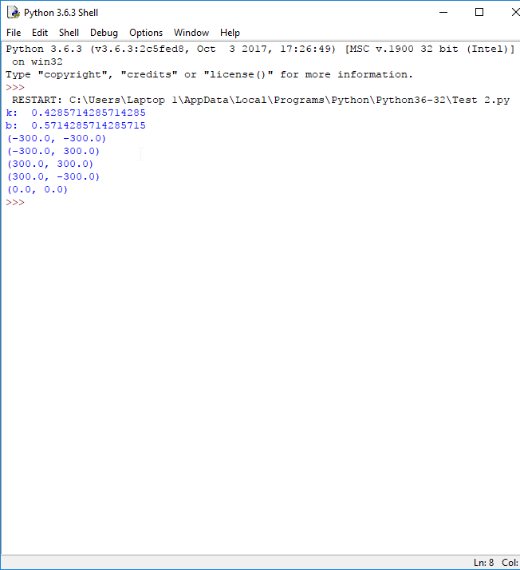
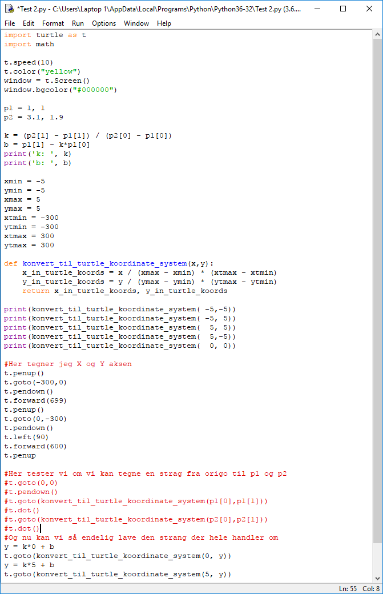

Python - To datapunkter og en matematisk model i form af en linje f(x) = kx + b
Kort forklaring:
Vi lavede en tavleopgave ved at se, hvad Karl har lavet og først lavet lidt forberedelse. Opgaven gik ud på at finde to datapunkter og en matematisk model i form af en linje f(x) = kx + b
Opgaven var at lave et program som skulle opfylde karvene under.
Med Python 3 og Turtle modulet:
- Tegn koordinatsystemet og disse to datapunkter. p1=(1, 1) og p2=(3. 1.9).
- Udregn hældningskoefficienten k = deltaY/deltaX og lav en funktion med navnet fx() som kan bruges til at tegne en streg i gennem de to punkter for x i området fra 0 til 5.
Herunder er dokumentationen for arbejdet

